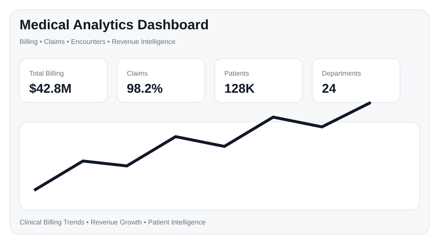
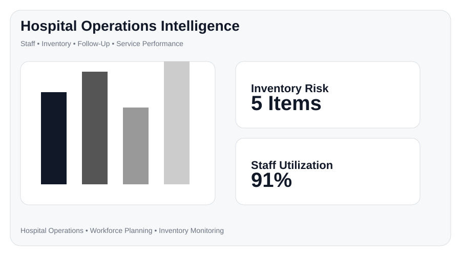
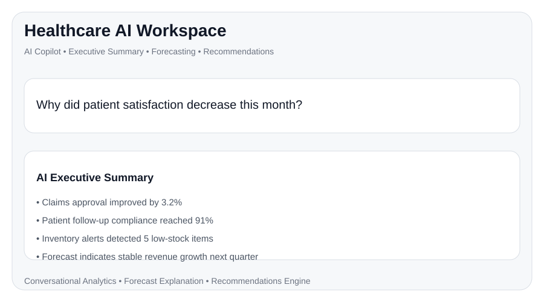

Business, Steel & Financial Intelligence
Revenue, margin, cash flow, GST, forecasting, inventory, audit readiness, Tally integration and AI Copilot for owners, CFOs, finance and operations teams.
View business modulesShowcase-ready platforms for manufacturing, financial intelligence, GST, healthcare, hospital operations, inventory, forecasting and AI Copilot workflows — built around each client’s data, KPIs and business rules.
The website showcases both the Enterprise Business / Steel Analytics platform and the Medical Demo Analytics platform, proving that the same BI architecture can be adapted across industries.
Revenue, margin, cash flow, GST, forecasting, inventory, audit readiness, Tally integration and AI Copilot for owners, CFOs, finance and operations teams.
View business modules
Healthcare analytics covering billing, claims, encounters, consultants, service mix, patient follow-up, inventory, staff operations, demographics and AI Workspace.
View medical modulesP&L, EBITDA, margins, profitability, cost and cash performance.
Operating, investing and financing cash flow with trend monitoring.
GST payable, ITC available, ITC utilized, remaining ITC and compliance visibility.
Vendor matching, mismatch heatmaps, duplicate tracking and unclaimed ITC.
Production, capacity, grade mix, stock movement and operational intelligence.
Forecast movement, confidence ranges, scenario impact and recommendations.
Based on the Medical Demo Analytics app, this section highlights how the framework can support clinical billing, claims, consultants, staff, inventory, patient follow-up, demographics and AI-assisted healthcare reporting.
Total billing, total claims, average bill, encounters and billing share.
KPI trends, 3D clinical billing, heatmaps, consultant performance and department mix.
Care type mix, service mix, procedure comparison and quarterly trends.
Staff information, shift logs, performance distribution and logged hours.
Inventory visibility, low stock alerts and operational risk monitoring.
Interaction analytics, satisfaction trends and patient detail views.
Age group distribution, region-wise billing and patient segmentation.
Executive summaries, quick insights, alerts, recommendations and forecast explanations.


Configured for business, manufacturing, finance or healthcare contexts, the Copilot can answer plain-English questions, summarize performance, highlight risks and explain forecasts.

Ask business questions and receive calculation-backed answers, insights and recommendations.

Generate management-ready summaries across revenue, margin, inventory, compliance and risk.

Explain forecast movement, confidence ranges, scenario impact and action recommendations.
Every implementation can be adapted to the client’s business model, source systems, terminology, KPI definitions, approval workflows, compliance needs and executive reporting style.
AI components can be configured based on privacy, latency, cost and deployment needs.
Low-latency inference for conversational analytics, forecast explanations and summaries.
Open model support for domain-specific business or healthcare Q&A.
Configurable open-weight model option for secure and cost-aware deployments.


Use manufacturing, finance or healthcare examples to demonstrate how the same architecture adapts to each client’s reports, KPIs and workflows.
Submit your details or connect Formspree, Getform, or EmailJS in
script.js.